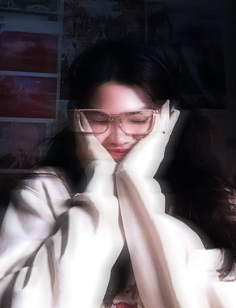
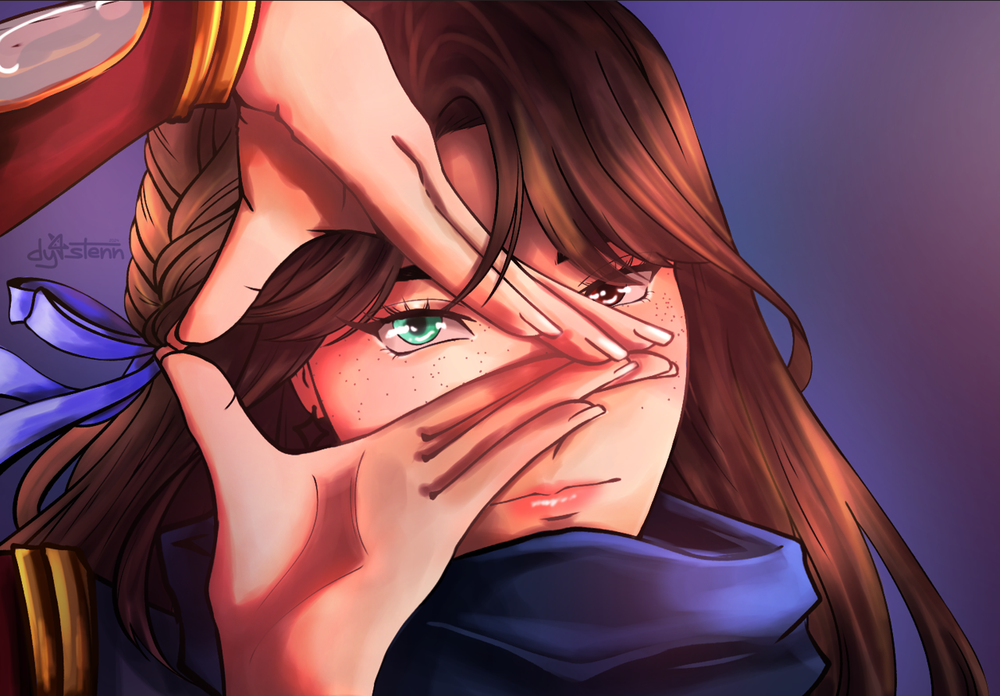

Hello, I’m Dyastenn!
Currently a 2nd Year Computer Engineering Student
with a dream to be in Game Development and hopefully
release my own indie game in the future.
I am also a self-taught Artist from the Philippines.
My passion is with creating and expressing myself through art.
I am a freelancer and have done many art commissions for
people all over the world! Feel free to browse my page!
If you have any inquiries, my contact information is listed below!
Birthday: January 14
Nationality: Filipino
Hobbies: Drawing, Video Games

Feel free to message me for inquiries!
Email: dyastenn@gmail.com
Instagram: @dy4stenn